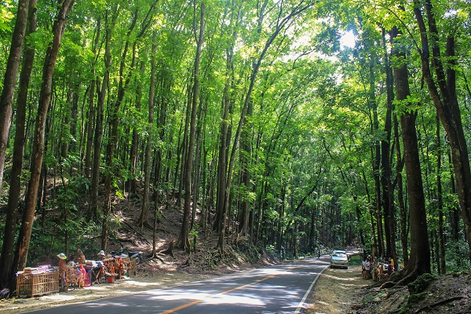
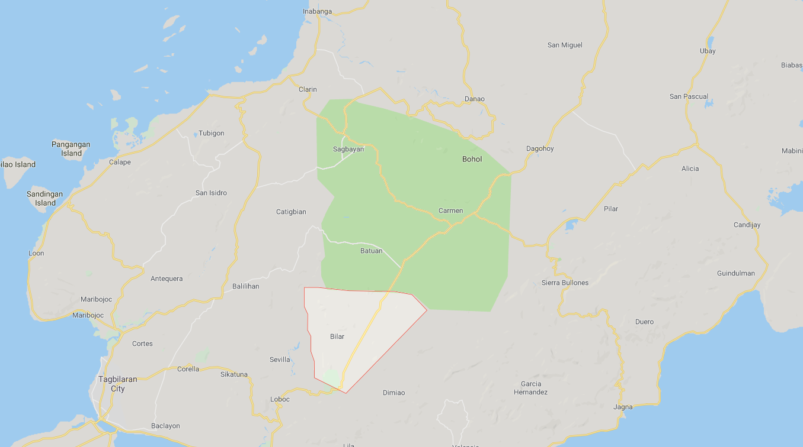

 
DESCRIPTION:The Bohol man-made forest is the first and only man-made
forest in the Philippines. It is mainly composed of Mahogany trees about
2 kilometers stretched densely in towns of Bilar and Loboc.
LOCATION: It is 5 minutes away from Simply Butterflies Conservation Center and 20
minutes away from Tagbilaran City, the lone City of Bohol. Before entering
the Bohol man-made forest, one can see the variety of trees and giant ferns
along the road.
The Bohol man-made forest has been one of the many tourist attractions in the
Philippines. It stands out because of its uniformity in height, the spread of the
branches and the thickness of the leaves. The tidy road and forest make it
very relaxing to Bohol trippers. Both locals and tourists stay for 30 minutes to
1 hour to breathe the fresh air and hear the natural sounds of birds and
trees. The splendid view and the wonderful erectile order of the Bohol man-made
forest makes it very attractive to travelers.
Nature preservation is one of the main activities of the Bohol Government and one
of the things they are proud of is preserving the Bohol man-made forest. When
you enter the 2 km dense forest, you can feel the sudden change in
temperature and the freshness of the air. This is very noticeable in the summer
season from March to June where the humidity in the Philippines is crazy. When
you are in this mountainous area you will rarely see the sun and once you see
it you still don’t feel the entire heat due to the shades from the branches
and leaves. The roots are protruded from the ground and one can sit and eat
some snacks there. Just be careful of some lizards or ants that might crawl to
you.
In the road-side, middle part of the Bohol man-made forest, a shelter is provided
for visitors to cook and eat their snacks. On our trip, we brought a handy
stove and tempura for snacks. Watching those who are hiking through the woods
and seeing the mountain bikers on the asphalted road are other things to do in
the place. The Bohol man-made forest is part of the main road used by vans,
buses, public and private transport to access the different areas of Bohol.
Before entering the long and winding road of Bohol man-made forest, one will be
able to pass the town of Loboc where the popular Loboc River and Floating
Restaurant is situated. After the 2 kilometer forest, one will pass the towns of
Bilar where the Butterfly Sanctuary is located, then Batuan Town and then
Carmen where the world-class Chocolate Hills are seen.
Bohol man-made forest is an extreme work of art. The magnificent efforts of these
world-class Filipinos who started this brilliant nature preservation activity
will definitely help make the Earth a better place to live in. We hope that
even in the midst of Global modernization, nature preservers will never stop
what they love to do.